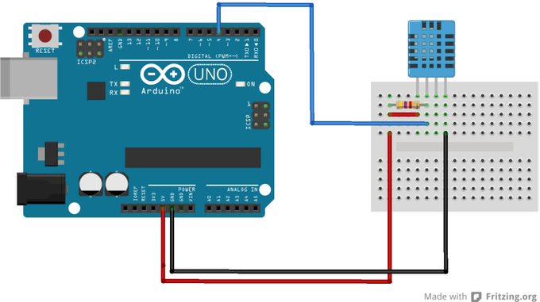
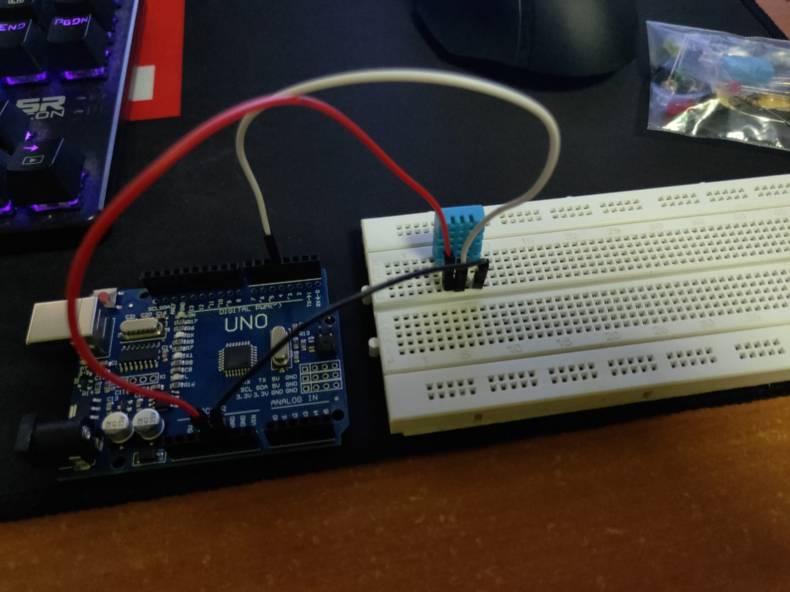
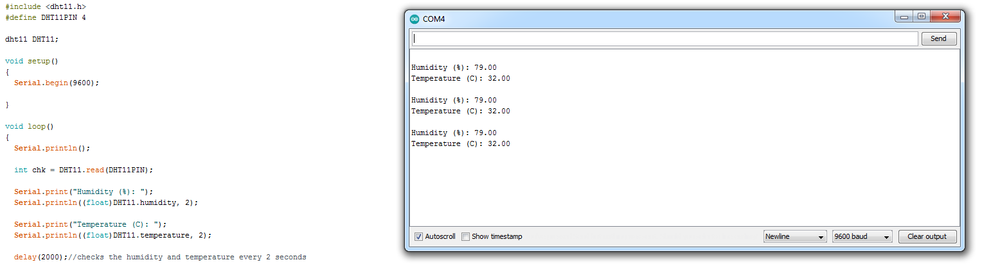
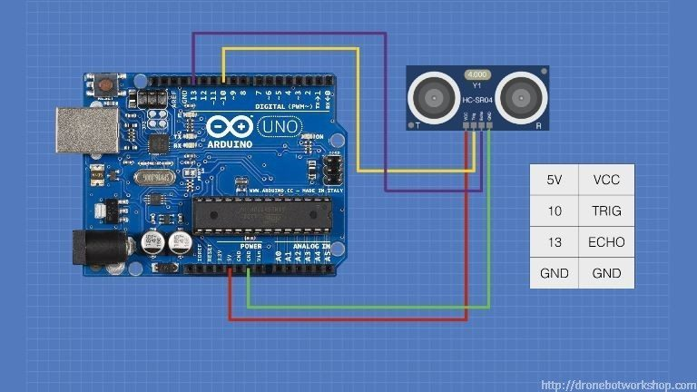
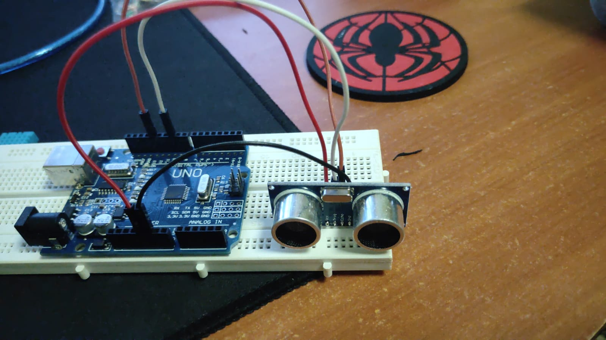
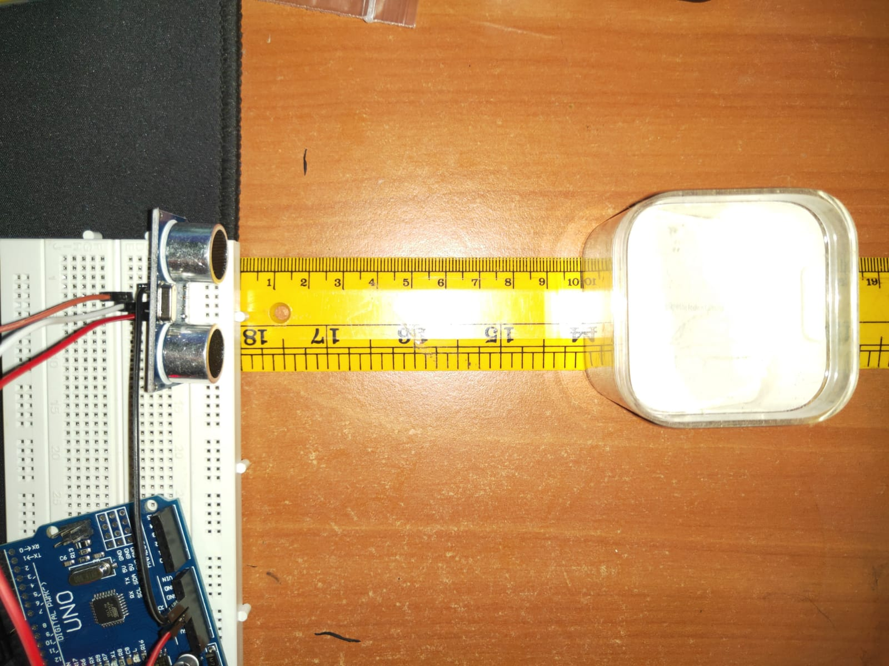
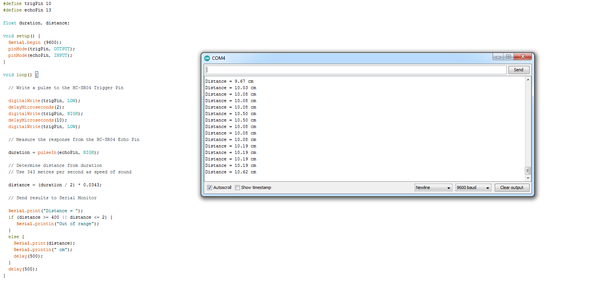
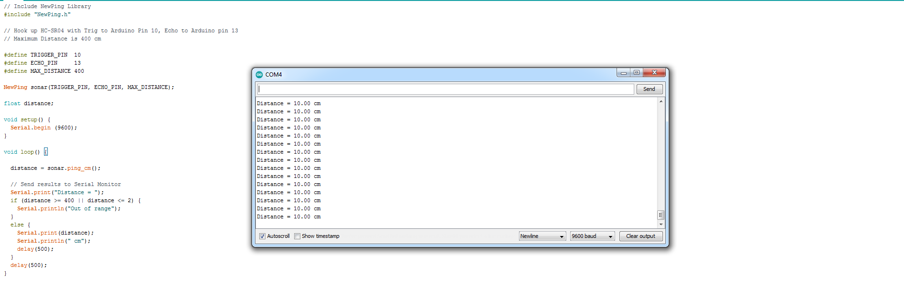

Input Devices
Often called Sensors. The process of connecting a Sensor to a computer processor sustem is called Interfacing.
Sensors
- a device, module, machine or subsystem whose purpose is to detect events or changes in its environment and send the information to other electronics, frequently a computer processor.
- Used in everyday objects to read changes in the environment
- readings are usually analog by nature.
- Changes are usually slower in availability (compared to computer processors) and require some processing techniques.
Methods of reading sensors
There are 3 basic methods of reading/obtaining information from a sensor which are dependant on the availability of the information, as read by the sensor
-
Always Available
- Just read the data, data is always available
- Changes to the reading occur very slowly.
- Processor has to continually query/poll the sensor for information.
- Sensor will usually indicate whether there is new information through another signal or have a drastic change in the reading to indicate that there is a new reading available.
- When Processor “sees” this change, data is read.
- Example is a switch
- is a signal(s) that is used to initiate the reading.
- The sequence is as follows:
- Processor sends a signal to the sensor for data
- Sensor gathers information, and when ready
- Sends reading back to the Processor. The Sensor may also indicate that data is ready to be read by sending back an Acknowledge/Ready signal
- An example is an ultrasonic distance measurement
Arduino Libraries
The Arduino System is very popular because there is large number of libraries (of code) available for almost every Sensor that you can think of. There are two types of libraries. Internally by searching it up using the Arduino IDE system, and externally which are available online as compressed C++ code. To add libraries to ur Arduino IDE,
- Using the Library Manager
- IDE > Sketch > Install Library > Manage Libraries
- Search for library
- Highlight and click Install, when complete, it should state “Installed”
- Using External Library
- Search for the library on the Internet
- Download the library, usually in a compressed .ZIP file
- IDE > Sketch > Include Library > Add .Zip Library
- Re-open IDE.
- Manually adding External Library
- Search for the library on the Internet
- Download the library, usually in a compressed .ZIP file
- Locate where your sketch folder is found on your computer (IDE > File > Preferences > Sketchbook)
- Extract the Library from the ZIP file (this is usually a folder)
- Copy the extracted library folder to [Sketchbook folder] > Libraries folder
- Re-open IDE
Once you added your Library, to check if it has been successfully added, simply got to IDE > Sketch > Include Library and you should see your installed library there. Simply just click on the library to apply the code to your application.
Type of sensors
Switches
It is an electrical component that can disconnect or connect the conducting path of a circuit. It provides a LOW or HIGH signal depending on the circuitry. To determine the value of a switch, we have to use digitalRead(). There are a few types of switches. Those include:
-
Toggle
This is a mechanical switch that changes the state each time the switch is thrown/manipulated. For example, if in the ON position, throwing the switch will change it to th OFF position and will remain there until the switch is thrown.
PushbuttonThis is a spring-loaded mechanical switch that changes state when the switch is pressed. When released (and because of the spring) the switch returns to the original state. There are two types of pushbutton switches. The one that is normally closes where you push it to open or break connection adn the one that is normally open which does the same thing.
SlideThis is a switch which is closed or opened by a sliding mechanism and when changed, the switch remains in the new state.
Touch CapacitiveThis is a switch that works based on body capacitance. When a person touches it, the body increases the capacitance of the switch and triggers the switch.
Temperature, Humidity
The environment can be measured using a number of devices, the most common and cheapest is to use the DHT-11 temperature and humidity sensor. Temperature is a physical quantity that expresses hot or cold. Reference temperatures include:
- Water Freezing Point = 0 Degress Celsius
- Water Boiling Point = 100 Degrees Celsius
- Typical Singapore Temperature = 28 - 32 Degrees Celsius
Humidity is the measure of the concentration of water vapor present in the air. Singapore’s humidity is between 70-90%. The DHT-11> and DHT-22 can both be used to measure temperature and humidty while the LM35 and DS18B20 can only measure temperature.
Distance
The devices that measures distance can range from a limit switch to an ultrasonic sensor. Examples include Obstacle Avoidance Sensor, which is able to detect (not measure) a distance of 2cm to 4m, can use ENABLE pulse or continuous measurement. The aviodance distance is adjusted with a potentiometer. Another example is Ultrasonic Sensor. It can measure a distance of between 2cm to 4m. It uses SONAR, which returns a pulse proportional to the distance. The ranging accuracy is 3mm and the measuring angle is 15 degrees. Distance is equivalent to pulse measured.
Assignments (13 July)
DHT-11
For our assingments this week, we are suppose to interface the two sensors as mentioned above. For the first one, I interfaced the DHT-11. With reference to the picture below, I connected the actual thing on my breadboard.
 {kind=link}
{kind=link}
Click to enlarge
Once that is done i went ahead and upload the program onto Arduino IDE, including the DHT Library and it works. This is rather a simple connection and code so there isn't much to it.
{kind=link}
Click to enlarge
Ultrasonic Sensor
Similarly to the DHT-11 connection, as reference to the image below, i connected up the sensor on my breadboard. The red and black wire being VCC and GND respectively while the white and orange is the TIG and ECHO respectively.
 {kind=link}
{kind=link}
Click to enlarge
As for the code, the first one works without needing a library(as seen below) however, with the inclusion of the NewPing Library, we are able to get a more accurate reading on our measurements.
Practical Measurement
{kind=link}
Click to enlarge
Readings without NewPing
{kind=link}
Click to enlarge
Readings With NewPing
{kind=link}
Click to enlarge
Output Devices
Just like input devices, ouput devices are often called Actuators.An Actuator is a component that moves or controls movement. We use output devices to display information or move mechanisms.
Actuators
We use computer processors to control actuators so that we can obtain output (display, movement, motion) precisely. This is a very efficient as we can get precise control over the devices.We can also use computer processors to control the amount of energy supplied giving rise to control of speed or motion.Some output devices include:
- Displays
- Motors
- Control of high-powered devices
- Transistor driver
- Relays
Method Of Control
Output devices are usually slower to react than the signals sent by the computer processor, hence we usually need to insert a delay for the reaction time. For instance if we were to remove the delay for LED blinking code(as seen below), we will not be able to see the changes happening as our eyes only respond to changes greater than 1/30 second. Hence, we would see that the LED is always lit up (known as Persistence of Vision)

Click to enlarge
There are common methods of controlling output devices. Some of which include, continually send output information, using a timer to send data, based on a preset delay and query, wait for a signal from the output device before sending new data.
Output Devices with Arduino
LED Displays
- Referenced by the diameter of the LED e,g, 3mm. 5mm, 10mm. It uses digitalWrite() to send HIGH/LOW signals, current limiting resistor and a delay to see the results
- Similar to a single LED except that you have 3 LEDs fused into the housing (requires a current limiting resistor for EACH of the R, G, B). Either common cathode (connect to GND) or common anode (connect to Vcc). Placing a signal on each of the R, G, B pins lights up the respective color of the LED. In order to get different hues, shades use PWM (analogWrite()) to change the average voltage of each color pin.
Heres an example of a code for the RGB

Click to enlarge
- As the name suggests, it has 7 segments of individual LEDs enclosed in a single housing to form a single digit. It is available in 2 modes (no difference in operation). Common Cathode(CC) and Common Anode (CA). It can be driven using 7 digital output lines, bcd-to-7 segment or hex-to-7 segment converters (4 digital lines) or special multiplexing ICs e.g. TM1637 (4 digit 7-segment)
- Liquid Crystal Display (LCD) which is able to output 2 rows of 16 characters each. (different sizes are available e.g. 2x20, 4x20), requires 8 data lines, 3 control lines, Vcc, GND. Data is sent in parallel to the display, together with control lines to sequence the commands and data. The LCD we were given comes with an I2C interface which only requires 2 wires (SCL and SDA) besides power and ground.

Click to enlarge
Motors
Motors play an important role in the movement of mechanisms and objects. There are many types of motors, but to be classified simply, they are AC and DC motors where AC uses alternating current power while DC uses direct current power. DC motors also consists of series DC motors, servo and stepper motors.
DC Motors
- Rotational speed is proportional to the applied voltage.If we can control/change the voltage we can change the speed. Pulse Width Modulation (PWM) provides a means for control. Most motors also draw a lot of current. We can use a relay which allows the switching of higher currents which is usually for direction of rotation, not speed. Apart from that we can use a NPN transistor/MOSFET to supply the current. The transistor acts as a switch and is able to drive the current. Using PWM, we can control the speed of the motor.
- Lastly, we can also use H-bridge. It allows control of direction as well as speed. This is the standard method of control of DC motors.

Servo Motors
- You may need to provide extra electrical current from an external source to the servo motor. It has an internal control circuit with geared motors where it is controlled using pulses (PWM) and that the pulses are determined by (1) the position of the servo motor and (2)direction of rotation of the servo motor. A simple calibration sircuit uses potentiometer to read in analog value controls with pulse width by mapping analog value (0-1023) to percentage (0-255)

Click to enlarge
Stepper Motors
- A stepper motor is a motor that is able to move in “steps”. Each step is a division (in degrees) of the full rotational movement done by activating the motor coils, in turn. They are great for exact positional control, moving forward or backwards at specific speeds and in robots or CNC machines (e.g. 3D printers, Laser cutters).
Assignment(17 July)
For this week, we had to comeback to sch for our lesson and we were tasked to interface the LCD panel using I2C and also a Servo or Stepper motor. Below shows how i interfaced it.
I2C LCD
For this assignment, we are tasked to write a program to display my name on the first line and a running count starting from 0, updating once every second. Here's how I did it.
The code

Click to enlarge
Servo Motor
For this first assignment, we were suppose to test our stepper motor using the example from the stepper motor library. So heres the code and what i got after uploading the code to my arduino.

Click to enlarge
Next we had to interface a potentiometer to control the direction of the motor. I tried doing it on the actual motor but it would not work so i decided to do it on Tinkercad. The connection is as follows=> Red=5V, Black=GND, Servo Signal=pin 9 and Potentiometer Wiper=A0
Heres the connection alongside the code that i did